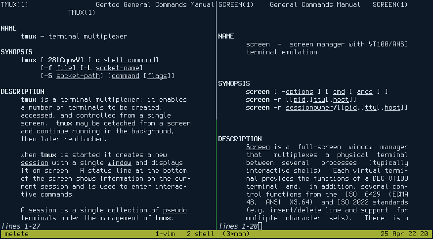
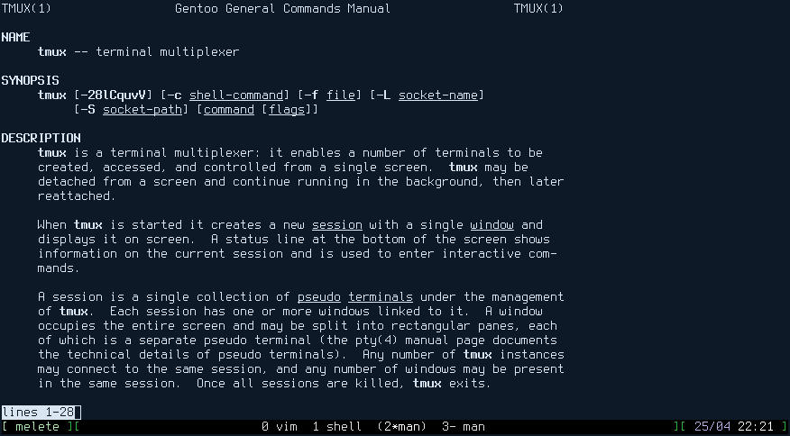

I can’t imagine my daily work in terminal without multiplexers. I used to use GNU Screen a couple of years ago, then I switched to Tmux.
There has been a lot of talks about screen vs tmux, and then vs byubu. I still use both, and I still like both. What I was really missing is session management.
Since my laptop’s uptime is normally more than a month - I just created windows manually and started programs manually and then just attached/detached until the next reboot. Honestly, I never heard about session management tools until yesterday. Then I stumbled upon tmuxinator…
Install ruby to just manage terminal sessions?! What’s wrong with this world?!
So, I quickly googled for other alternatives, and found that most of them are tmux-oriented, and it seems like nobody cares about the good old GNU Screen.
That’s how I started my own session manager for both, tmux and screen.
Mucks (btw, it also means “protest” in German) is written in UNIX Shell, and I hope has no bashisms. Seems like the only external program it uses (other than screen and tmux) is sed, so in theory it should be highly portable.
It’s also just one file of ~100LOC, so it should not be hard to read or to install it. I also tried to do some tests at least for the configuration parser (right, there are test frameworks for UNIX Shell as well).
So, just download the sources (or at least one mucks file) - and you’re ready to use it:
git clone https://github.com/zserge/mucks
Now let’s create a simple session
Each session is described in a separate configuration file. You may store all your session files in your home directory and run them as:
$ mucks ~/myproject.mucksrc
Or you may store session configurations inside the project directories:
$ cd ~/myproject # There should be a file called .mucksrc
$ mucks # It picks .mucksrc automatically
Here’s an example of such a mucksrc file I just used:
#
# Mucks project
#
name: mucks
dir: /home/serge/src/serge/mucks
mux: tmux
[vim]
vim mucks test.sh mucksrc.example -p
[shell]
[man]
man tmux
- vsplit
man screen
Here’s how it looks in my tmux and screen:


You may see on tmux the screen is split in two for man pages, while in screen these are still two separate windows (not panes). This is because of the different nature of how screen and tmux handle panes - in screen panes are not parts of the window, but are rather global for the whole session (each pane contains all of the windows). Also, in screen splits disappear during the detach, so I decided to create new windows for screen splits, so user still could manually organize them if he wants.
There are two sections in each session config - a header with global session settings and a layout section with the list of windows.
Header is just a list of variables and their values separated by a colon:
name: My project
foo: bar
At the moment only the following variables are supported:
Layout section looks like an INI file, each window title is a section and below is text to be typed into the window and some internal commands to be performed:
# This opens a window called "code editor"
# running vim with list of files shown
[code editor]
vim
ihello^[
Yes, section body is not a shell command, but exact keys to be typed into the window. It allows to run some vim commands like ‘gt’ or to open certain web pages in w3m, or open ssh sessions and do something remotely.
Every line that starts with a dash (“-”) is an internal command. These are now used to set up pane layout, but probably later they will be more powerful. At the moment only “hsplit” and “vsplit” commands are supported - they split current window horizontally or vertically (sorry, that works only in tmux, as mentioned above).
As you can see, session configuration file is extremely simple, yet it can save a lot of typing for complex sessions.
For my humble needs even the current version of mucks is usable. Adding more features? I can think of more complex layouts, proportional splits etc. Also I’d like to have automatic detection of tmux and screen depending on which one is available.
Probably I should add the support of byubu and wemux.
I would be happy to add the support of dvtm, they have added a fifo to send internal commands to a running dvtm instance recently, but I’m not sure how flexible it is now.
And how do you use terminal multiplexor sessions?
Posted on 2014-04-25